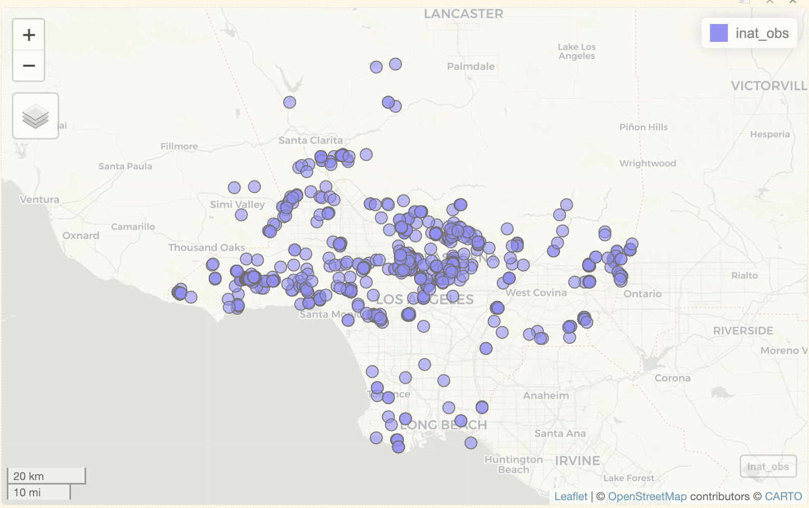
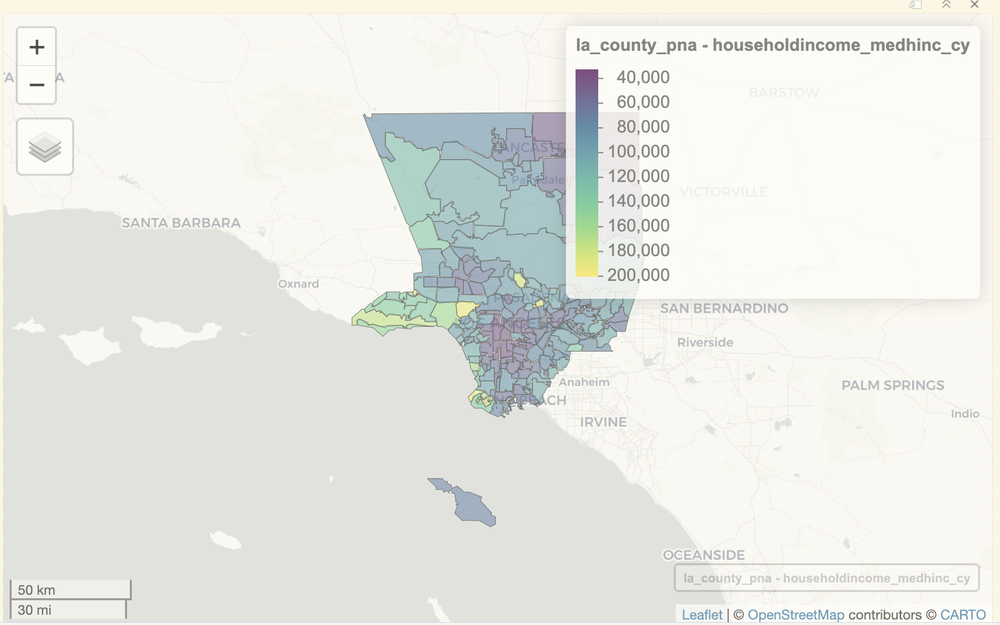
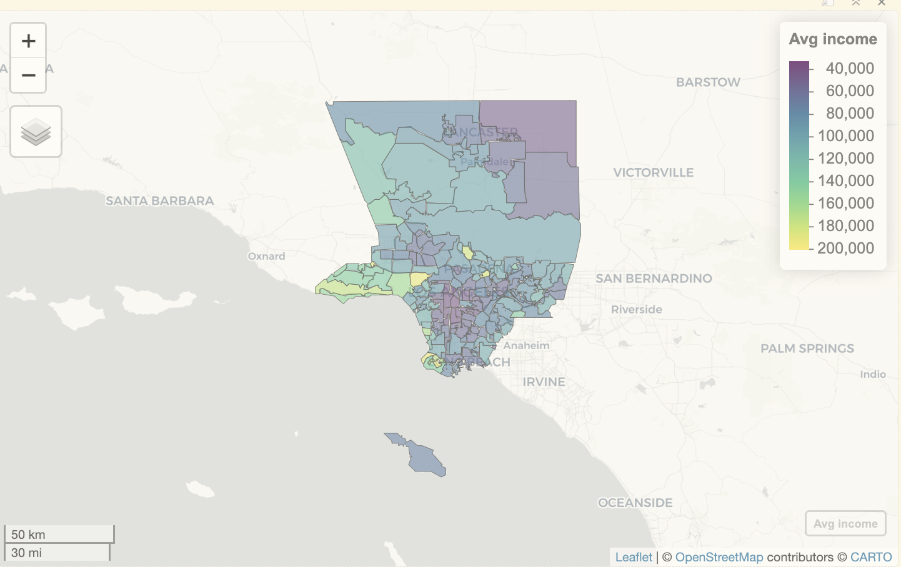
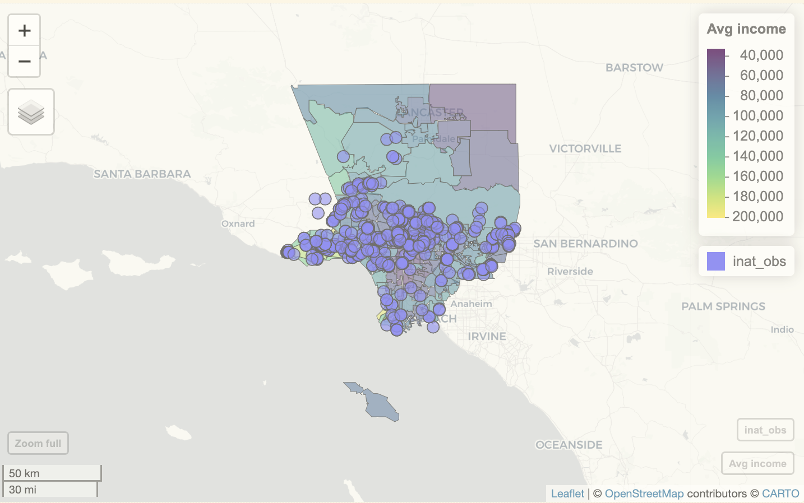
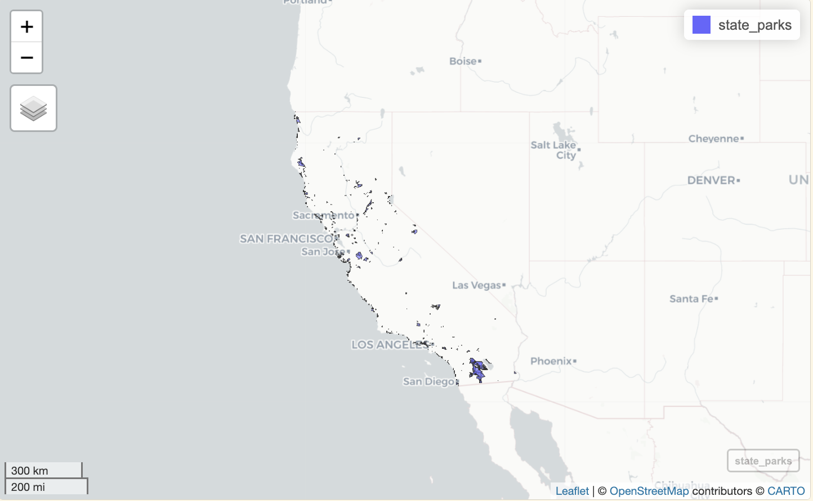
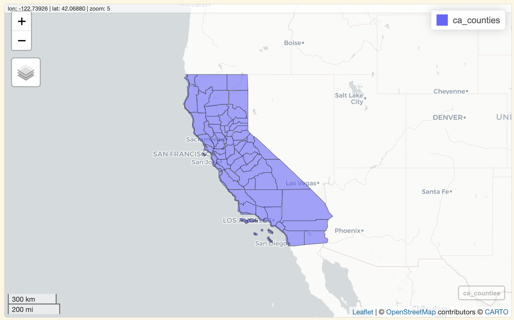
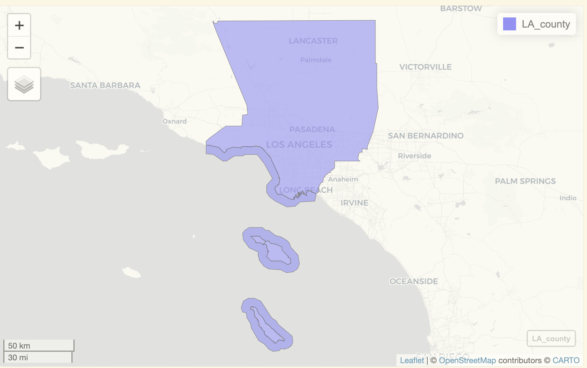
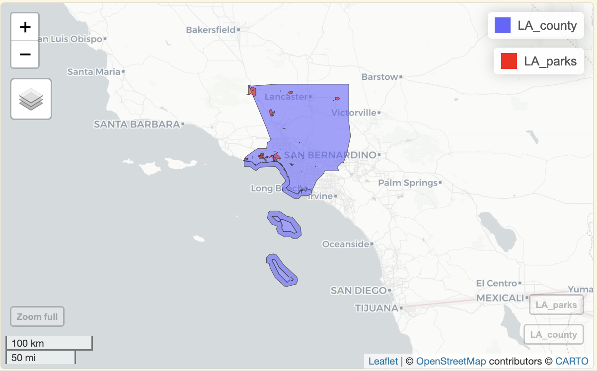
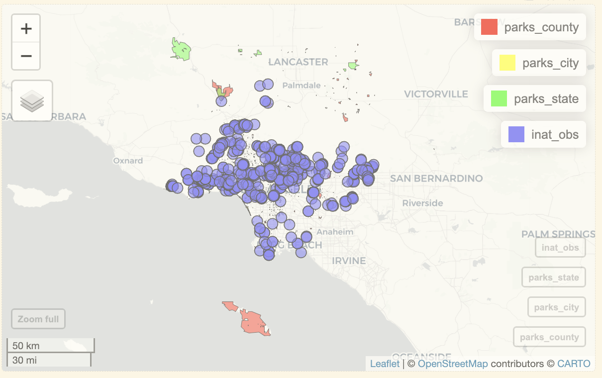

library(dplyr)
library(mapview)
library(readr)
library(dplyr)
library(sf)
library(ggplot2)Using to other datasets
Questions
- How do we get other datasets?
objectives
- Combine other datasets with iNaturalist data
Load packages
Other datasets
There are various geospatial datasets that you can use while analyzing iNaturalist data. Some datasets are free to use, some require crediting the original datasource.
For this workshop, I downloaded a few datasets from Los Angeles Geohub https://geohub.lacity.org We are using demographics data gathered by Los Angeles county. A lot of their demographics data comes from the U.S. Census. We are also using parks date from L.A. county and L.A. city.
iNaturalist data
Let’s get observations for Coast Live Oak and create a map.
inat <- read_csv('data/cleaned/cnc-los-angeles-observations.csv')Add a geometry column using st_as_sf(). Select observations for ‘Quercus agrifolia’ aka Coast Live Oak using filter().
oak_obs <- inat %>%
st_as_sf(coords = c("longitude", "latitude"), crs = 4326, remove=FALSE) %>%
filter(scientific_name == 'Quercus agrifolia') mapview(oak_obs)
Demographic data
Let’s compare iNaturalist data with demographics data about the people who in L.A.
L.A. County completed Comprehensive Countywide Park Needs Assessment in 2016. As part of that study, they looked at demographics data throughout the county. For more information: https://geohub.lacity.org/datasets/lacounty::l-a-county-park-needs-assessment-demographics/about
Note
A lot of demographics data from the Park Needs Assessment comes from the U.S. Census. The reason we’re using the parks data instead directly using Census data is because the Census data is more difficult to use. If you want to learn how to use U.S. Census data in R, check out the book [Analyzing US Census Data: Methods, Maps, and Models in R](https://walker-data.com/census-r/index.html)
Load Park Needs Assessment data. Use st_read() to read geojson file. Click la_county_pna in the Enviroment pane to browse the data frame.
la_county_pna <- st_read('data/raw/PNA_Demographics_for_Dashboard_(View_Layer_SDE)_8662424390864523907.geojson')Reading layer `PNA_Demographics_for_Dashboard_(View_Layer_SDE)_8662424390864523907' from data source `/Users/wyk/Development/science/city_nature_challenge/NHMLA_workshop/CNC-coding-workshop_quarto/lessons/data/raw/PNA_Demographics_for_Dashboard_(View_Layer_SDE)_8662424390864523907.geojson'
using driver `GeoJSON'
Simple feature collection with 189 features and 95 fields
Geometry type: MULTIPOLYGON
Dimension: XY
Bounding box: xmin: -118.9447 ymin: 32.7996 xmax: -117.6464 ymax: 34.8233
Geodetic CRS: WGS 84Let’s get the size of the dataframe, and compare CRS to the iNaturalist data.
dim(la_county_pna)[1] 189 96st_crs(la_county_pna) == st_crs(oak_obs)[1] TRUEThe last row has data for the entire LA County. Let’s remove that last row.
la_county_pna <- la_county_pna[-c(189), ]
dim(la_county_pna)[1] 188 96There are 96 fields in the dataset. Here’s a short description of the fields.
| field | description |
|---|---|
| STUD_AR_ID | Study Area ID |
| STUD_AR_NM | Study Area Name |
| STUD_AR_LBL | Label |
| TOOLKIT_ID | Toolkit ID |
| Acres | Park Acres |
| AC_PER_1K | Acres/1000 |
| RepPrkAc | Accessible Park Acres |
| NEED_DESCP | Need Description |
| PCT_Walk | Walkable Percentage |
| populationtotals_totpop_cy | Total Population |
| householdtotals_avghhsz_cy | Average Household Size |
| householdincome_medhinc_cy | Median Household Income |
| educationalattainment_nohs_cy | Pop Age 25+: < 9th Grade |
| educationalattainment_somehs_cy | Pop Age 25+: High School/No Diploma |
| educationalattainment_hsgrad_cy | Pop Age 25+: High School Diploma |
| educationalattainment_ged_cy | Pop Age 25+: GED |
| educationalattainment_smcoll_cy | Pop Age 25+: Some College/No Degree |
| educationalattainment_asscdeg_c | Pop Age 25+: Associate’s Degree |
| educationalattainment_bachdeg_c | Pop Age 25+: Bachelor’s Degree |
| educationalattainment_graddeg_c | Pop Age 25+: Grad/Professional Degree |
| educationalattainment_educbasec | Educational Attainment Base |
| sports_mp33003a_b_i | Participated in baseball in last 12 months: Index |
| sports_mp33004a_b_i | Participated in basketball in last 12 months: Index |
| sports_mp33005a_b_i | Participated in bicycling (mountain) in last 12 mo: Index |
| sports_mp33012a_b_i | Participated in football in last 12 months: Index |
| sports_mp33014a_b_i | Participated in golf in last 12 months: Index |
| sports_mp33015a_b_i | Participated in hiking in last 12 months: Index |
| sports_mp33016a_b_i | Participated in horseback riding in last 12 months: Index |
| sports_mp33020a_b_i | Participated in jogging/running in last 12 months: Index |
| sports_mp33024a_b_i | Participated in soccer in last 12 months: Index |
| sports_mp33025a_b_i | Participated in softball in last 12 months: Index |
| sports_mp33026a_b_i | Participated in swimming in last 12 months: Index |
| sports_mp33028a_b_i | Participated in tennis in last 12 months: Index |
| sports_mp33029a_b_i | Participated in volleyball in last 12 months: Index |
| sports_mp33030a_b_i | Participated in walking for exercise in last 12 mo: Index |
| F5yearincrements_pop0_cy | Population Age 0-4 |
| F5yearincrements_pop5_cy | Population Age 5-9 |
| F5yearincrements_pop10_cy | Population Age 10-14 |
| F5yearincrements_pop15_cy | Population Age 15-19 |
| F5yearincrements_pop20_cy | Population Age 20-24 |
| F5yearincrements_pop25_cy | Population Age 25-29 |
| F5yearincrements_pop30_cy | Population Age 30-34 |
| F5yearincrements_pop35_cy | Population Age 35-39 |
| F5yearincrements_pop40_cy | Population Age 40-44 |
| F5yearincrements_pop45_cy | Population Age 45-49 |
| F5yearincrements_pop50_cy | Population Age 50-54 |
| F5yearincrements_pop55_cy | Population Age 55-59 |
| F5yearincrements_pop60_cy | Population Age 60-64 |
| F5yearincrements_pop65_cy | Population Age 65-69 |
| F5yearincrements_pop70_cy | Population Age 70-74 |
| F5yearincrements_pop75_cy | Population Age 75-79 |
| F5yearincrements_pop80_cy | Population Age 80-84 |
| F5yearincrements_pop85_cy | Population Age 85+ |
| F5yearincrements_pop18up_cy | Population Age 18+ |
| F1yearincrements_age18_cy | Population Age 18 |
| F1yearincrements_age19_cy | Population Age 19 |
| MEAN_Asthma | MEAN Asthma |
| MEAN_Low_Birth_Weight | MEAN Low_Birth_Weight |
| MEAN_Cardiovascular | MEAN Cardiovascular |
| raceandhispanicorigin_hisppop_c | Hispanic Population |
| raceandhispanicorigin_nonhisp_c | Non-Hispanic Population |
| raceandhispanicorigin_nhspwht_c | Non-Hispanic White Pop |
| raceandhispanicorigin_nhspblk_c | Non-Hispanic Black Pop |
| raceandhispanicorigin_nhspai_cy | Non-Hispanic American Indian Pop |
| raceandhispanicorigin_nhspasn_c | Non-Hispanic Asian Pop |
| raceandhispanicorigin_nhsppi_cy | Non-Hispanic Pacific Islander Pop |
| raceandhispanicorigin_nhspoth_c | Non-Hispanic Other Race Pop |
| raceandhispanicorigin_nhspmlt_c | Non-Hispanic Multiple Race Pop |
| Age0_17Pct | Age 0-17 Pct |
| Age18_34Pct | Age 18-34 Pct |
| Age35_54Pct | Age 35-54 Pct |
| Age55_69Pct | Age 55-69 Pct |
| Age70upPct | Age 70+ Pct |
| HispanicPct | Hispanic Pct |
| WhitePct | White Pct |
| Black_Pct | Black Pct |
| Asian_Pct | Asian Pct |
| Am_Indian | American Indian Pct |
| Pac_Island | Pacific Islander Pct |
| Other_Race | Other Race Pct |
| Multi_Race | Multiple Race Pct |
| No_HS | No High School Diploma Pct |
| HS_Grad | High School Graduate Pct |
| Some_College | Some College Pct |
| College | College Degree Pct |
| unemprt_cy | Unemployment Rate |
Household Median Income
Let’s look at the Household Median Income. We can use zcol to choose which column view to in the map. The field ‘householdincome_medhinc_cy’ refers to Household Median Income.
mapview(la_county_pna,
zcol='householdincome_medhinc_cy')
There are two issues with the previous map.
The name of the layer is too long. We can rename the layer using
layer.name ='New Name'When you click on region, the popup shows too many fields. To select the columns displayed in popups, we can set the columns using
dataframe[c('col_1', 'col_2')].
In R, a vector is a list of items. c() is a function from R that creates a vector from a list of values.
layer.name ='Avg income' sets the layer name to ‘Avg income’.
la_county_pna[c('STUD_AR_NM', 'householdincome_medhinc_cy')] sets the columns show in the popup to householdincome_medhinc_cy and STUD_AR_NM
mapview(la_county_pna[c('STUD_AR_NM', 'householdincome_medhinc_cy')],
zcol='householdincome_medhinc_cy',
layer.name ='Avg income') 
Add iNaturalist data to the map.
mapview(la_county_pna[c('STUD_AR_NM', 'householdincome_medhinc_cy')],
zcol='householdincome_medhinc_cy',
layer.name ='Avg income') +
mapview(oak_obs)
Exercise 1
Create a map using one of the columns from Park Needs Assessment.
- use
z_colto pick a column from Park Needs Assessment - set which fields are shown in the popup
mapview(la_county_pna[c('PCT_Walk')],
zcol='PCT_Walk') +
mapview(oak_obs)Extracting objects from an existing file
Sometimes we find a geospatial file that has more than we need. We only want some data in the file.
California State Parks has file that lists all the state parks in California. https://www.parks.ca.gov/?page_id=29682
California state has a file that lists all the counties in California. https://gis.data.ca.gov/datasets/California::california-county-boundaries-and-identifiers/explore
Let’s get the California state park within Los Angeles county.
state_parks <- read_sf('data/raw/Park_Boundaries/ParkBoundaries.shp')mapview(state_parks)
ca_counties <- read_sf('data/raw/California_County_Boundaries_and_Identifiers_Blue_Version_view_2716745428963682036/California_County_Boundaries_and_Identifiers.shp')mapview(ca_counties)
Compare CRS for the state parks map and the county map.
st_crs(state_parks) == st_crs(ca_counties)[1] FALSEUse st_transform() to change the CRS of counties map to match the parks map.
ca_counties <- st_transform(ca_counties, crs = st_crs(state_parks))
st_crs(state_parks) == st_crs(ca_counties)[1] TRUELet’s get the boundary for Los Angeles County
LA_county <- ca_counties %>%
filter(COUNTY == 'Los Angeles County')mapview(LA_county)
Use st_intersects() to find the state parks within LA county.
LA_parks <- state_parks[st_intersects(state_parks, LA_county ) %>% lengths > 0,]mapview(LA_county) + mapview(LA_parks, col.regions ='red')
Use st_write() to save the boundaries for state parks within Ventura County as a Shape file. The first argument is the map data we want to save, and the second argument is the file path.
st_write(LA_parks, 'data/cleaned/state_parks_los_angeles_county/state_parks_los_angeles_county.shp')Parks
Let’s compare iNaturalist data with the location of state, conty, and city parks.
California State Parks: https://www.parks.ca.gov/?page_id=29682
County of Los Angeles parks: https://geohub.lacity.org/datasets/lacounty::dpr-park-facilities-view-accessible-parks/explore
City of Los Angeles parks: https://geohub.lacity.org/datasets/lahub::los-angeles-recreation-and-parks-boundaries/about
Load all the parks data.
parks_state <- read_sf('data/cleaned/state_parks_los_angeles_county/state_parks_los_angeles_county.shp')
parks_county <- read_sf('data/raw/DPR_Park_Facilities_View_(Accessible_Parks)/DPR_Park_Facilities_View_(Accessible_Parks).shp')
parks_city <- read_sf('data/raw/Los_Angeles_Recreation_and_Parks_Boundaries/Los_Angeles_Recreation_and_Parks_Boundaries.shp')Let’s get the size of the dataframe, and compare CRS to the iNaturalist data.
dim(parks_county)[1] 292 145st_crs(parks_county) == st_crs(oak_obs)[1] FALSEdim(parks_city)[1] 561 17st_crs(parks_city) == st_crs(oak_obs)[1] FALSEdim(parks_state)[1] 40 12st_crs(parks_state) == st_crs(oak_obs)[1] FALSEWe want to convert the CRS of the parks data to match the CRS of the iNaturalist data.
parks_county <- st_transform(parks_county, crs = 4326)
st_crs(parks_county) == st_crs(oak_obs)[1] TRUEparks_city <- st_transform(parks_city, crs = 4326)
st_crs(parks_city) == st_crs(oak_obs)[1] TRUEparks_state <- st_transform(parks_state, crs = 4326)
st_crs(parks_state) == st_crs(oak_obs)[1] TRUECreate map with parks and iNaturalist data. Use col.region to set the color of the parks.
mapview(parks_county, col.region='red') +
mapview(parks_city, col.region='yellow') +
mapview(parks_state, col.region='green') +
mapview(oak_obs)